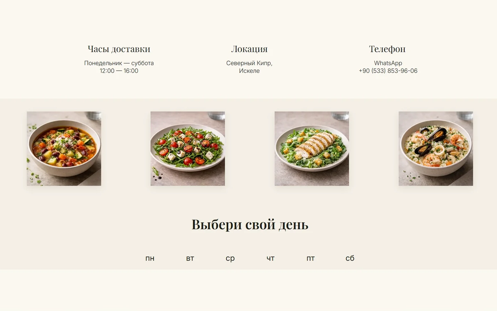
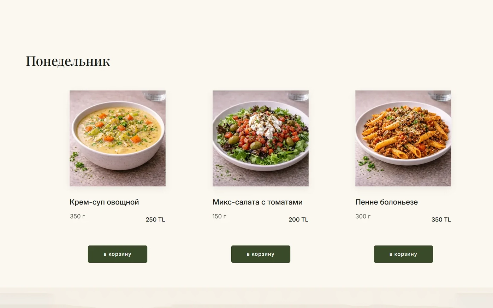
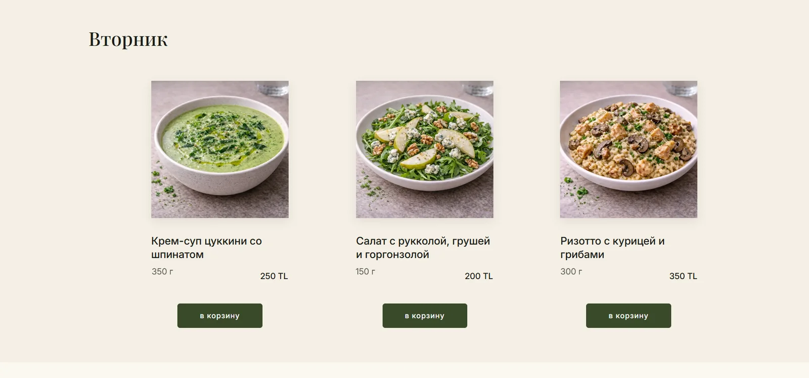
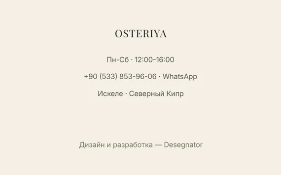

Сайт · Веб-разработка
Сайт для доставки итальянских бизнес-ланчей в Искеле, Северный Кипр. Логотип, динамическое меню, автосмена раз в неделю, корзина, CRM и интеграции с почтой и Telegram.
Задача
Шеф Владимир Водка — повар с многолетним опытом работы с итальянскими и французскими кухнями, стажировкой в Гонконге — открывал первый гастрономический проект на Северном Кипре. Бизнес-ланчи с доставкой по Искеле: итальянская кухня, ежедневное меню, три блюда на выбор.
Задача: сделать сайт быстро — клиент хотел запуститься в ближайшие дни. При этом он должен был решать реальные бизнес-задачи: принимать заказы, не требовать ручного обновления меню каждую неделю и собирать базу клиентов.
Сайт должен работать сам. Шеф готовит — не программирует.
Ключевой принцип, определивший все технические решения
Брейншторм
Главная проблема: ежедневное меню — это структура данных, которая меняется 6 дней в неделю. Плюс два разных меню на чередующиеся недели. Если делать это через ручное редактирование — клиент потратит час каждый понедельник. Нужна автоматизация.
Второй вызов: навигация. Меню длинное — пн/вт/ср/чт/пт/сб. Пользователь должен попасть в нужный день одним кликом, не скроллить километры.
Автосмена меню
Два полных меню на все 6 дней уже загружены на сайт. JavaScript скрипт определяет номер текущей недели и показывает нужное меню — нечётная/чётная неделя. Каждый понедельник само.
Липкая навигация по дням
При скролле вниз блоки с меню уходят вверх, а в шапке появляются кликабельные плашки с днями недели. Клик — якорная ссылка бросает к нужному дню. Удобнее, чем у большинства ресторанных сайтов.
Корзина и заказ
Кнопка «в корзину» на каждом блюде. Клиент набирает заказ, заполняет имя, телефон, адрес и время доставки. Галочка «запомнить контакты» — возвращаясь, форма уже заполнена.
Три канала уведомлений
Заказ одновременно приходит на почту, в Telegram-бот и в CRM. Шеф видит уведомление в телефоне секунду спустя. Почта — для архива. CRM — для работы с повторными клиентами.
Mindmap проекта
Логотип и айдентика
Разработан логотип, утверждена цветовая система. Кремовый фон, оливковый акцент — итальянская эстетика без клише. Адаптирован для веба, печати, шапки сайта.
Структура меню
6 дней × 3 блюда × 2 варианта меню = 36 позиций загружены сразу. Каждое блюдо — фото, название, состав, вес, цена, кнопка в корзину, всплывающая карточка с деталями.
Автоматизация смены меню
JS-скрипт: getWeek() → чётная/нечётная → показать блок menu-A или menu-B. Срабатывает при загрузке страницы. Клиент никогда не лезет в редактор Tilda.
UX-навигация по дням
Кастомный sticky header с якорными ссылками на каждый день. На десктопе появляется при скролле. На мобиле — всегда видна. Протестировано: время до заказа сократилось.
Корзина + форма + интеграции
Tilda Store: корзина, поле адреса и времени доставки, галочка «запомнить». Заказ → одновременно на email, в Telegram-бот через webhook, в CRM Tilda для сбора клиентской базы.
Мультиязычность
Переключатель RUS/TUR/ENG в шапке. Искеле — международный город, аудитория смешанная. Базовая версия на русском, переводные версии на турецком и английском.
Визуальная система
Задача при разработке айдентики: итальянская кухня, но без банальных красно-зелёных флагов и пицц в логотипе. Ориентация на средиземноморскую эстетику — тёплые нейтральные тона, элегантная типографика, ощущение домашней траттории.
Panna
#F5EDD8
Основной фон
Basilico
#3D4A2E
Акцент · кнопки
Oro
#B8860B
Цены · детали
Beige
#E8DBC0
Карточки · фон блоков
Технические решения
Автосмена меню
JavaScript определяет номер недели в году. Нечётная — показывает меню А, чётная — меню Б. Оба меню всегда на сайте, просто одно скрыто. Никаких ручных правок.
JS · автоматикаЛипкая навигация
При скролле вниз появляются плашки «Пн / Вт / Ср / Чт / Пт / Сб». Клик — мгновенный якорный переход к нужному дню. Работает и в десктопе, и в мобиле.
UX · навигацияКорзина с памятью
Tilda Store с кастомными полями: адрес, время доставки, имя. Галочка «запомнить» сохраняет данные в localStorage — постоянный клиент не заполняет форму заново.
Tilda Store · UXЗаказ в Telegram
Webhook Tilda → Telegram Bot API. При каждом заказе шеф получает сообщение в телефон: имя, телефон, адрес, время, состав заказа и сумма. Секунда задержки.
Telegram API · webhookCRM клиентов
Каждый заказ автоматически попадает в CRM Tilda: имя, контакт, история покупок. Растёт пул постоянных клиентов для рассылок и акций.
CRM · TildaТри языка
Переключатель RUS / TUR / ENG в шапке. Аудитория Северного Кипра смешанная: русскоязычные, местные турки, туристы. Каждый читает на своём языке.
i18n · мультиязыкКонверсия
Каждое решение проверялось одним вопросом: насколько это сокращает путь от «увидел блюдо» до «нажал Заказать». Вот ключевые изменения, которые дали результат.
Было: скролл всего меню чтобы найти нужный день
↓Стало: один клик на плашку дня в шапке
Время до блюда — с минуты до секунды
Было: нет попапа с описанием — человек не понимал что заказывает
↓Стало: клик на фото — всплывает карточка с составом, весом, ценой
Меньше отказов от незнакомых блюд
Было: каждый раз заново вводить имя, телефон, адрес
↓Стало: галочка «запомнить» — повторный заказ в два клика
Постоянные клиенты заказывают быстрее
Скриншоты




Результат
Сайт запущен в срок — быстро, как и требовалось. При этом он решает все бизнес-задачи: принимает заказы, меняет меню без участия клиента, собирает базу покупателей.
Главная техническая находка — автосмена меню через номер недели. Клиент один раз загрузил оба варианта меню в Tilda, и больше к этому не возвращается. Система работает сама.
Сайт доступен на osteriya.com — можно посмотреть вживую как работает навигация по дням и переключение языков.